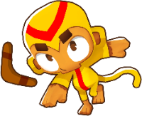
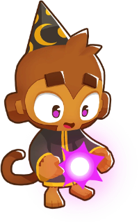
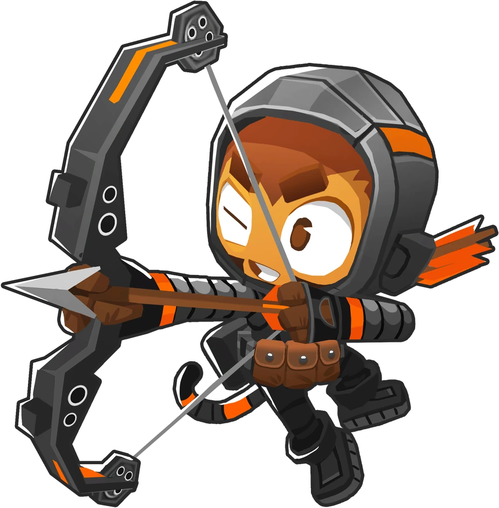
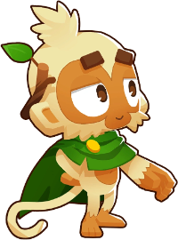
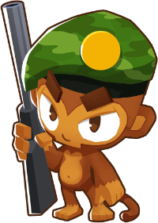
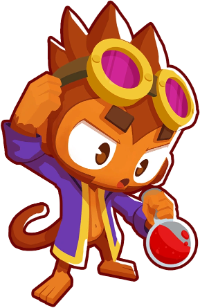

01 / AUTOMATION
Choose. Check. Play.
Select a map and variation, check its required hero and tower paths, and run a recorded strategy. Bloons+ sends the planned placements, upgrades and round controls.
Maps and modes →Put a recorded strategy to work, watch your game and keep track of what is left to earn.
Windows · Steam BTD6 · Available route required


A plan for your next medal.Choose an available route for a medal you need. The replay handles its planned inputs while you follow the run.
See your first-run guide →
Select a map and variation, check its required hero and tower paths, and run a recorded strategy. Bloons+ sends the planned placements, upgrades and round controls.
Maps and modes →
The sweep works through eligible medals still missing from supported save progress. Owned medals are skipped. Missing routes, restrictions and requirements are shown.

Watch the VM screen inline while the viewer is open. Use replay controls or stop after the current run. Checkpoint recovery is available when its saved state and live game can be verified.
Connecting your game →
Guided setup checks required components and the VM connection. Send app updates from your PC, follow action logs and prepare a redacted report when something fails.
Find help →Supported account data keeps the overview grounded in your game.
Browse medals, completed Steam achievements and supported progress counters.
Compare route requirements with detected heroes and unlocked upgrade paths.
Follow run outcomes, active time and available Monkey Money and XP rate estimates.
Keep replay warnings and failed attempts for troubleshooting across sweeps.
We are shaping what comes next around the way people actually use Bloons+. Plans and availability will be shared when they are ready.
Dedicated event workflows are still in development.
Bloons+ is free forever. Pro is planned for 31 October 2026 at $5.99 monthly or $49.99 annually. Example features remain in development.
Compare subscriptions →Preview software. Routes can lose when game versions, map mechanics or account unlocks differ.

Swap strategies, get setup help and follow new releases.